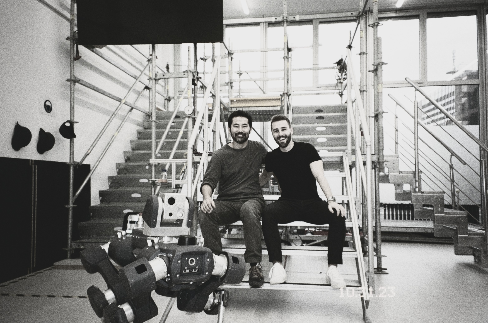

Engineering · 01
Anymal X
Work on a mobile robotic platform developed for autonomous inspection in challenging industrial environments.
Field
Robotics
Period
2023
Focus
Mechanical engineering

The project
Engineering a system for demanding environments.
Anymal X is a mobile robotic platform designed to support autonomous inspection in complex industrial environments.
My work involved contributing to the development of the physical system, approaching challenges through analysis, prototyping and practical experimentation.
This project strengthened my understanding of how mechanical design, manufacturing constraints and system-level thinking come together in a working robotic platform.

Reflection
What I took from the experience.
The project showed me the importance of designing beyond an individual component. Every decision influences manufacturing, assembly, maintenance and the wider robotic system.
It also reinforced the value of iteration: understanding a problem, testing an idea and improving it through observation.